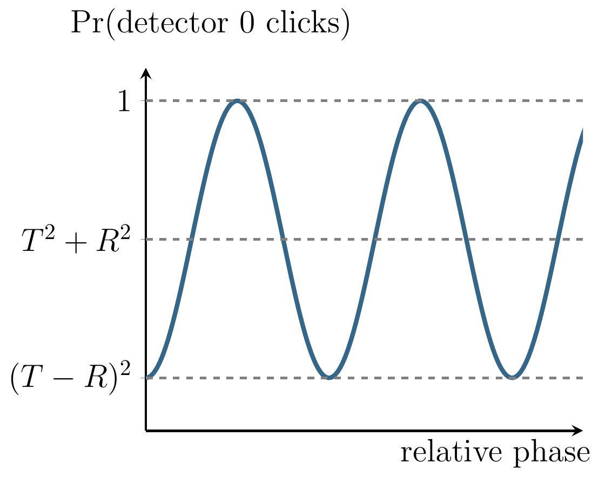
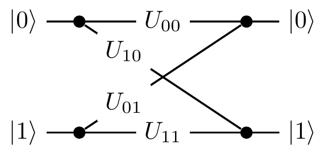
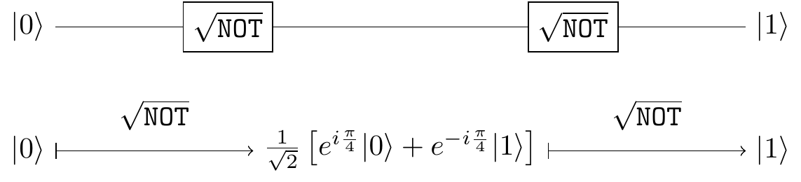

Chapter 2 Qubits
About quantum bits and quantum circuits, including the “impossible” square root of \(\texttt{NOT}\), as well as an introduction to single-qubit unitaries and rotations of the Bloch sphere, and the implications concerning universal gates.
2.1 Composing quantum operations
In order to understand something in its full complexity it is always good to start with the simplest case. Let us take a closer look at quantum interference in the simplest possible computing machine: the one that has only two distinguishable configurations — two quantum states — which we label as \(|0\rangle\) and \(|1\rangle\). We prepare the machine in some input state, usually \(|0\rangle\), and let it evolve: the machine undergoes a prescribed sequence of computational steps, each of which induces transitions between the two “computational states”, \(|0\rangle\) and \(|1\rangle\). The machine then ends in the output state \(|\psi\rangle=\alpha_0|0\rangle+\alpha_1|1\rangle\), meaning the two outputs, \(|0\rangle\) and \(|1\rangle\), are reached with probability amplitudes \(\alpha_0\) and \(\alpha_1\), respectively. In the process of computation each computational step \(U\) (also referred to as an operation) sends state \(|k\rangle\) to state \(|l\rangle\), where \(k,l=0,1\), but only with some amplitude \(U_{lk}\). We write this as \[\begin{equation} |k\rangle \mapsto \sum_l U_{lk} |l\rangle. \tag{2.1} \end{equation}\] (watch out for the order of the indices).
Thus any computational step \(U\) of this machine can be described by a matrix which tabulates all the transition amplitudes: \[ U = \begin{bmatrix} U_{00} & U_{01} \\U_{10} & U_{11} \end{bmatrix}. \] The matrix element \(U_{lk}\) represents the amplitude of transition from state \(|k\rangle\) to state \(|l\rangle\) (again, watch the order of indices). To be clear, the entries in this matrix are not any random complex numbers: their moduli squared represent transition probabilities, which in turn implies that such matrices must be unitary.22 Recall that matrix \(U\) is called unitary if \[U^\dagger U = UU^\dagger = \operatorname{id}\] where the adjoint or Hermitian conjugate \(U^\dagger\) of any matrix \(U\) with complex entries \(U_{ij}\) is obtained by taking the complex conjugate of every element in the matrix and then interchanging rows and columns (\(U^\dagger_{kl}= U^\star_{lk}\)).
We can also describe \(U\) by drawing a diagram, which contains exactly the same information as the matrix representation, but just in a different form:

Now how can we find some quantum interference to study? Consider two computational steps, \(U\) and \(V\). What is the amplitude that input \(|k\rangle\) will generate output \(|m\rangle\)? We have to check all computational paths leading from input \(|k\rangle\) to output \(|m\rangle\) and add the corresponding amplitudes. For example, as you can see in Figure 2.1, input \(|0\rangle\) and output \(|1\rangle\) are connected by the two computational paths: \(|0\rangle\mapsto|0\rangle\mapsto|1\rangle\) (amplitude \(V_{10}U_{00}\)) and \(|0\rangle\mapsto|1\rangle\mapsto|1\rangle\) (amplitude \(V_{11}U_{10}\)). Thus the total amplitude that input \(|0\rangle\) gives output \(|1\rangle\) is the sum \(V_{10}U_{00}+V_{11}U_{10}\), and when we take the modulus squared of this expression we will see the interference term.

Figure 2.1: The composition of two computational steps, \(U\) and \(V\), with the possible paths from \(|0\rangle\) to \(|1\rangle\) highlighted.
In general, given \(U\) and \(V\) \[ \begin{aligned} |k\rangle &\mapsto \sum_l U_{lk}|l\rangle \\|l\rangle &\mapsto \sum_m V_{ml}|m\rangle \end{aligned} \] we can compose the two operations: we first apply \(U\), and then \(V\), to obtain \[ \begin{aligned} |k\rangle &\mapsto \sum_l U_{lk} \left( \sum_m V_{ml}|m\rangle \right) \\&= \sum_m \left( \sum_l V_{ml}U_{lk} \right) |m\rangle \\&= \sum_m (VU)_{mk} |m\rangle. \end{aligned} \]
If you want to hone your quantum intuition think about it the following way. The amplitude that input \(|k\rangle\) evolves to \(|m\rangle\) via a specific intermediate state \(|l\rangle\) is given by \(V_{ml}U_{lk}\) (evolutions are independent so the amplitudes are multiplied). This done, we have to sum over all possible values of \(l\) (the transition can occur in several mutually exclusive ways so the amplitudes are added) to obtain \(\sum_l V_{ml}U_{lk}\). Thus the matrix multiplication \(VU\) (watch the order of matrices) in one swoop takes care of multiplication and addition of amplitudes corresponding to different computational paths.
2.2 Quantum bits, called “qubits”
A two-state machine that we have just described in abstract terms is usually realised as a controlled evolution of a two state system, called a quantum bit or a qubit. For example, state \(|0\rangle\) may be chosen to be the lowest energy state of an atom, the ground state, and state \(|1\rangle\) a higher energy state, the excited state. Pulses of light of appropriate frequency, duration and intensity can take the atom back and forth between the basis states \(|0\rangle\) and \(|1\rangle\) (implementing logical \(\texttt{NOT}\)).

Some other pulses, say, half the duration or intensity will take the atom into states that have no classical analogue. Such states are called coherent superpositions of \(|0\rangle\) and \(|1\rangle\), and represent a qubit in state \(|0\rangle\) with some amplitude \(\alpha_0\) and in state \(|1\rangle\) with some other amplitude \(\alpha_1\). This is conveniently represented by a state vector \[ |\psi\rangle = \alpha_0|0\rangle + \alpha_1|1\rangle \leftrightarrow \begin{bmatrix} \alpha_0 \\\alpha_1 \end{bmatrix} \]

A qubit is a quantum system in which the Boolean states \(0\) and \(1\) are represented by a prescribed pair of normalised and mutually orthogonal quantum states labelled as \(\{|0\rangle,|1\rangle\}\). The two states form a so-called computational (or standard) basis, and so any other state of an isolated qubit can be written as a coherent superposition \[ |\psi\rangle = \alpha_0|0\rangle + \alpha_1|1\rangle \] for some \(\alpha_0\) and \(\alpha_1\) such that \(|\alpha_0|^2 + |\alpha_1|^2 = 1\).
In practice, a qubit is typically a microscopic system, such as an atom, a nuclear spin, or a polarised photon.
As we have already mentioned, any23 Here we are talking about isolated systems. As you will soon learn, a larger class of physically admissible operations is described by completely positive maps. It may sound awfully complicated but, as you will soon see, it is actually very simple. computational step, that is, any physically admissible operation \(U\) on a qubit, is described by a \((2\times 2)\) unitary matrix \(U\). It modifies the state of the qubit as \[ |\psi\rangle \mapsto |\psi'\rangle = U|\psi\rangle \] which we can write explicitly as \[ \begin{bmatrix} \alpha'_0 \\\alpha'_1 \end{bmatrix} = \begin{bmatrix} U_{00} & U_{01} \\U_{10} & U_{11} \end{bmatrix} \begin{bmatrix} \alpha_0 \\\alpha_1 \end{bmatrix} \] That is, operation \(U\) sends state \(|\psi\rangle\), with components \(\alpha_k\), into state \(|\psi'\rangle=U|\psi\rangle\), with components \(\alpha'_l= \sum_k U_{lk}\alpha_k\).
2.3 Quantum gates and circuits
Atoms, trapped ions, molecules, nuclear spins and many other quantum objects, which we call qubits, can be used to implement simple quantum interference, and hence simple quantum computation. There is no need to learn about physics behind these diverse technologies if all you want is to understand the basics of quantum computation. We may now conveniently forget about any specific experimental realisation of a qubit and just remember that any manipulations on qubits have to be performed by physically admissible operations, and that such operations are represented by unitary transformations.
A quantum (logic) gate is a device which performs a fixed unitary operation on selected qubits in a fixed period of time, and a quantum circuit is a device consisting of quantum logic gates whose computational steps are synchronised in time. The sizes of the circuit is the number of gates it contains.
Some unitary \(U\) acting on a single qubit is represented diagrammatically as

This diagram should be read from left to right. The horizontal line represents a qubit that is inertly carried from one quantum operation to another. We often call this line a quantum wire. The wire may describe translation in space (e.g. atoms travelling through cavities) or translation in time (e.g. a sequence of operations performed on a trapped ion). A sequence of two gates acting on the same qubit, say \(U\) followed by \(V\), is represented by

and is described by the matrix product \(VU\) (note the order in which we multiply the matrices).
2.4 Single qubit interference
Let me now describe what is probably the most important sequence of operations performed on a single qubit, namely a generic single qubit interference. It is typically constructed as a sequence of three elementary operations:
- the Hadamard gate
- a phase shift gate
- the Hadamard gate again.
We represent it graphically as

| Hadamard | Phase |
|---|---|
| \(H=\frac{1}{\sqrt2}\begin{bmatrix}1&1\\1&-1\end{bmatrix}\) | \(P_\varphi=\begin{bmatrix}1&0\\0&e^{i\varphi}\end{bmatrix}\) |
| \(\begin{array}{lcr}|0\rangle&\mapsto&\frac1{\sqrt{2}}(|0\rangle+|1\rangle)\\|1\rangle&\mapsto&\frac1{\sqrt{2}}(|0\rangle-|1\rangle)\end{array}\) | \(\begin{array}{lcr}|0\rangle&\mapsto&|0\rangle\\|1\rangle&\mapsto&e^{i\varphi}|1\rangle\end{array}\) |
You will see it over and over again, for it is quantum interference that gives quantum computation additional capabilities. The product of the three matrices \(HP_\varphi H\) describes the action of the whole circuit: it gives the transition amplitudes between states \(|0\rangle\) and \(|1\rangle\) at the input and the output as \[ e^{i\frac{\varphi}{2}} \begin{bmatrix} \cos\varphi/2 & -i\sin\varphi/2 \\-i\sin\varphi/2 & \cos\varphi/2 \end{bmatrix} = \frac{1}{\sqrt 2} \begin{bmatrix} 1 & 1 \\1 & -1 \end{bmatrix} \begin{bmatrix} 1 & 0 \\0 & e^{i\varphi} \end{bmatrix} \frac{1}{\sqrt 2} \begin{bmatrix} 1 & 1 \\1 & -1 \end{bmatrix} \]
Given that our input state is almost always \(|0\rangle\), it is sometimes much easier and more instructive to step through the execution of this circuit and follow the evolving state. The interference circuit effects the following sequence of transformations:24 We ignore the global phase factor \(e^{i\frac{\varphi}{2}}\). \[ |0\rangle \overset{H}{\longmapsto} \frac{1}{\sqrt2} \left( |0\rangle+|1\rangle \right) \overset{P_\phi}{\longmapsto} \frac{1}{\sqrt2} \left( |0\rangle+e^{i\phi}|1\rangle \right) \overset{H}{\longmapsto} \cos\frac{\phi}{2}|0\rangle - i\sin\frac{\phi}{2}|1\rangle. \] The first Hadamard gate prepares an equally weighted superposition of \(|0\rangle\) and \(|1\rangle\) and the second one closes the interference by bringing the interfering paths together. The phase shift \(\varphi\) effectively controls the evolution and determines the output. The probabilities of finding the qubit in state \(|0\rangle\) or \(|1\rangle\) at the output are, respectively, \[ \begin{aligned} \mathop{\mathrm{Pr}}(0) &= \cos^2\frac{\phi}{2} \\\mathop{\mathrm{Pr}}(1) &= \sin^2\frac{\phi}{2}. \end{aligned} \] This simple quantum process contains, in a nutshell, the essential ingredients of quantum computation. This sequence (Hadamard – phase shift – Hadamard) will appear over and over again. It reflects a natural progression of quantum computation: first we prepare different computational paths, then we evaluate a function which effectively introduces phase shifts into different computational paths, then we bring the computational paths together at the output.
2.5 The square root of NOT
Now that we have poked our heads into the quantum world, let us see how quantum interference challenges conventional logic. Consider a following task: design a logic gate that operates on a single bit and such that when it is followed by another, identical, logic gate the output is always the negation of the input. Let us call this logic gate the square root of \(\texttt{NOT}\), or \(\sqrt{\texttt{NOT}}\).

A simple check, such as an attempt to construct a truth table, should persuade you that there is no such operation in logic. It may seem reasonable to argue that since there is no such operation in logic, \(\sqrt{\texttt{NOT}}\) is impossible. But it does exist! Experimental physicists routinely construct such ``impossible’’ gates in their laboratories. It is a physically admissible operation described by the unitary matrix25 There are infinitely many unitary operations that act as the square root of \(\texttt{NOT}\). \[ \sqrt{\texttt{NOT}} = \frac12 \begin{bmatrix} 1+i & 1-i \\1-i&1+i \end{bmatrix} = \frac1{\sqrt2} \begin{bmatrix} e^{i\frac{\pi}{4}} & e^{-i\frac{\pi}{4}} \\e^{-i\frac{\pi}{4}} & e^{i\frac{\pi}{4}} \end{bmatrix}. \] Indeed, \[ \frac12 \begin{bmatrix} 1+i & 1-i \\1-i & 1+i \end{bmatrix} \frac12 \begin{bmatrix} 1+i & 1-i \\1-i & 1+i \end{bmatrix} = \begin{bmatrix} 0&1 \\1&0 \end{bmatrix}. \]
We could also step through the circuit diagram and follow the evolution of the state vector:

Or, if you prefer to work with column vectors and matrices, you can write the two consecutive application of \(\sqrt{\texttt{NOT}}\) to state \(|0\rangle\) as \[ \begin{bmatrix}0\\1\end{bmatrix} \longleftarrow\!\!\!\vert \frac{1}{\sqrt 2} \begin{bmatrix} e^{i\frac{\pi}{4}} \\e^{-i\frac{\pi}{4}} \end{bmatrix} \longleftarrow\!\!\!\vert \begin{bmatrix}1\\0\end{bmatrix} \] (following a well established convention, the formulae above should be read from right to left)26 Just remember that circuits diagrams are read from left to right, and vector and matrix operations go from right to left., where each \(\longleftarrow\!\!\!\vert\) denotes multiplication by \(\frac1{\sqrt2}\begin{bmatrix}e^{i\frac{\pi}{4}} & e^{-i\frac{\pi}{4}}\\e^{-i\frac{\pi}{4}} & e^{i\frac{\pi}{4}}\end{bmatrix}\).
One way or another, quantum theory explains the behaviour of \(\sqrt{\texttt{NOT}}\), and so, reassured by the physical experiments27 We discuss this in more detail in Appendix: Physics against logic, via beamsplitters. that corroborate this theory, logicians are now entitled to propose a new logical operation \(\sqrt{\texttt{NOT}}\). Why? Because a faithful physical model for it exists in nature!
2.6 Phase gates galore
As well as the generic phase gate \(P_\varphi\), let us mention three specific phase gates that will frequently pop up (two of which have rather confusing names, at first glance!).
| Generic phase | Phase-flip | \(\pi/4\)-phase | \(\pi/8\)-phase |
|---|---|---|---|
| \(P_\varphi=\begin{bmatrix}1&0\\0&e^{i\varphi}\end{bmatrix}\) | \(Z=\begin{bmatrix}1&0\\0&-1\end{bmatrix}\) | \(S=\begin{bmatrix}1&0\\0&i\end{bmatrix}\) | \(T=\begin{bmatrix}1&0\\0&e^{i\frac{\pi}{4}}\end{bmatrix}\) |
Note that the phase gate \(P_\varphi\) is only defined up to a global phase factor,28 In general, states differing only by a global phase are physically indistinguishable, and so it is physical experimentation that leads us to this mathematical choice of only defining things up to a global phase. and so we can write its matrix either as \[ P_\varphi = \begin{bmatrix} 1 & 0 \\0 & e^{i\varphi} \end{bmatrix} \] or as \[ P_\varphi = \begin{bmatrix} e^{-i\frac{\varphi}{2}} & 0 \\0 & e^{i\frac{\varphi}{2}} \end{bmatrix} \] The first version is more common in the quantum information science community, but the second one is sometimes more convenient to use, as it has determinant \(1\), and hence belongs to the group \(\mathrm{SU}(2)\). We will occasionally switch to the \(\mathrm{SU}(2)\) version of a phase gates, and this is where the \(\pi/4\)-phase and \(\pi/8\)-phase gates get their names, since their \(\mathrm{SU}(2)\) versions have \(e^{\mp i\pi/4}\) and \(e^{\mp i\pi/8}\) (respectively) on the diagonal.
The remaining gate (\(Z\)) is arguably the most important specific phase gate, since it is one of the Pauli operators, which we will now discuss.
2.7 Pauli operators
!!!TODO!!! rest of L2-qubits.tex
2.8 Appendix: Physics against logic, via beamsplitters
The square root of \(\texttt{NOT}\), and showing that it can be as simple as a symmetric beam-splitter. In fact, playing with mirrors and beam-splitters can give you lots of insights into the quantum world.
A symmetric beam-splitter is a cube of glass which reflects half the light that impinges upon it, while allowing the remaining half to pass through unaffected. For our purposes it can be viewed as a device which has two input and two output ports which we label as \(|0\rangle\) and \(|1\rangle\), as in Figure 2.2.
Figure 2.2: A beam-splitter.

When we aim a single photon at such a beam-splitter using one of the input ports, we notice that the photon doesn’t split in two: we can place photo-detectors wherever we like in the apparatus, fire in a photon, and verify that if any of the photo-detectors registers a hit, none of the others do. In particular, if we place a photo-detector behind the beam-splitter in each of the two possible exit beams, the photon is detected with equal probability at either detector, no matter whether the photon was initially fired from input port \(|0\rangle\) or \(|1\rangle\).
It may seem obvious that, at the very least, the photon is either in the transmitted beam \(|0\rangle\) or in the reflected beam \(|1\rangle\) during any one run of this experiment. Thus we may be tempted to think of the beam-splitter as a random binary switch which, with equal probability, transforms any binary input into one of the two possible outputs. However, that is not necessarily the case. Let us introduce a second beam-splitter and place two normal mirrors so that both paths intersect at the second beam-splitter, resulting in something resembling the Mach-Zehnder interferometer (see 2.3).
Figure 2.3: Two beam-splitters with mirrors, so that a photon travels through both.

Now, the axiom of additivity in probability theory says that whenever something can happen in several alternative ways we add probabilities for each way considered separately. We might argue that a photon fired into the input port \(|0\rangle\) can reach the detector \(0\) in two mutually exclusive ways: either by two consecutive reflections or by two consecutive transmissions. Each reflection happens with probability \(1/2\) and each transmission happens with probability \(1/2\) thus the total probability of reaching detector 0 is a sum of the probability of the two consecutive reflections (\(1/2\times 1/2 = 1/4\)) and the probability of the two consecutive transmissions (\(1/2\times 1/2 = 1/4\)) which gives probability \(1/2\). This is summarised in 2.4, and makes perfect sense — a random switch followed by a random switch should give nothing else but a random switch. However, if we set up such an experiment, that is not what happens!
There is no reason why probability theory or any other a priori mathematical construct should make any meaningful statements about outcomes of physical experiments.

Figure 2.4: The two possible classical scenarios. Note that this is not what actually happens in the real physical world!
In experimental reality, when the optical paths between the two beam-splitters are the same, the photon fired from input port \(|0\rangle\) always strikes detector 1 and never detector 0 (and the photon fired from input port \(|1\rangle\) always strikes detector 0 and never detector 1). Thus a beam-splitter acts as the square root of \(\texttt{NOT}\) gate.
The action of the beam-splitter — in fact, the action of any quantum device — can be described by tabulating the amplitudes of transitions between its input and output ports.29 Note that gate \(B\) is not the same square root of \(\texttt{NOT}\) as the one described in the first diagram in this section. There are infinitely many ways of implementing this “impossible” logical operation. \[\begin{equation} B = \begin{bmatrix} B_{00} & B_{01}\\ B_{10} & B_{11} \end{bmatrix} = \begin{bmatrix} \frac{1}{\sqrt 2} & \frac{i}{\sqrt 2}\\ \frac{i}{\sqrt 2} & \frac{1}{\sqrt 2} \end{bmatrix}. \tag{2.2} \end{equation}\] The matrix element \(B_{lk}\), where \(k,l=0,1\), represents the amplitude of transition from input \(|k\rangle\) to output \(|l\rangle\) (watch the order of indices). Each reflection (entries \(B_{01}\) and \(B_{10}\)) happens with amplitude \(i/\sqrt{2}\) and each transmission (entries \(B_{00}\) and \(B_{11}\)) happens with amplitude \(1/\sqrt{2}\). Thus the total amplitude that a photon fired from input port \(|0\rangle\) will reach detector \(0\) is the sum of the amplitude of the two consecutive reflections (\(i/\sqrt{2}\times i/{\sqrt 2} = -1/2\)) and the amplitude of the two consecutive transmissions (\(1/{\sqrt 2}\times 1/{\sqrt 2} = 1/2\)) which gives the total amplitude \(0\). The resulting probability is then zero. Unlike probabilities, amplitudes can cancel out each other out. We can now go on and calculate the amplitude that the photon will reach detector \(1\). In this case we will get \(i\), which gives probability \(1\). We can then switch to input \(|1\rangle\) and repeat our calculations. All possible paths and associated amplitudes are shown in 2.5.
Figure 2.5: All possible transitions and their amplitudes when we compose two beam-splitters \(B\).

However, instead of going through all the paths in this diagram and linking specific inputs to specific outputs, we can simply multiply the transition matrices: \[ BB = \begin{bmatrix} \frac{1}{\sqrt 2} & \frac{i}{\sqrt 2}\\ \frac{i}{\sqrt 2} & \frac{1}{\sqrt 2} \end{bmatrix} \begin{bmatrix} \frac{1}{\sqrt 2} & \frac{i}{\sqrt 2}\\ \frac{i}{\sqrt 2} & \frac{1}{\sqrt 2} \end{bmatrix} = \begin{bmatrix} 0 & i\\ i & 0 \end{bmatrix} = iX \] where \(X=\begin{bmatrix}0&1\\1&0\end{bmatrix}\) is the \(\texttt{NOT}\) operator.
Recalling The square root of NOT, we see that beam-splitters give a physical way of constructing the square root of \(\texttt{NOT}\).
| \(\texttt{NOT}\) | \(\sqrt{\texttt{NOT}}\) |
|---|---|
| \(X = \begin{bmatrix}0&1\\1&0\end{bmatrix}\) | \(B = \frac{1}{\sqrt2}\begin{bmatrix}1&i\\i&1\end{bmatrix}\) |
| bit flip | beam-splitter |
2.9 Appendix: Quantum interference revisited (still about beam-splitters)
One of the simplest quantum devices in which quantum interference can be controlled is a Mach-Zehnder interferometer — see Figure 2.6.
Figure 2.6: The Mach-Zehnder interferometer, with the input photon represented by the coloured dot. This experimental set-up is named after the physicists Ludwig Mach and Ludwig Zehnder, who proposed it back in 1890s.

It consists of two beam-splitters (the square boxes, bottom left and top right) and two slivers of glass of different thickness which are inserted into each of the optical paths connecting the two beam-splitters. The slivers are usually referred to as “phase shifters” and their thicknesses, \(\varphi_0\) and \(\varphi_1\), are measured in units of the photon’s wavelength multiplied by \(2\pi\). The two inputs ports of the interferometer are labelled as \(|0\rangle\) and \(|1\rangle\), and each of the two output ports, also labelled as \(0\) and \(1\), terminates in a photodetector.30 The two diagonal objects in the top-left and bottom-right corners of 2.6 are simply mirrors to make the two possible paths meet at the second beam-splitter.
A photon (the coloured dot in the figure) impinges on the first beam-splitter from one of the two input ports (here input 1) and begins its journey towards one of the two photodetectors. Let31 We will often use \(i\) as an index even though it is also used for the imaginary unit. Hopefully, no confusion will arise for it should be clear from the context which one is which. \(U_{ij}\) denote the probability amplitude that the photon initially in input port \(j=0,1\) ends up in detector \(i=0,1\). At each of the two beam-splitters the photon is transmitted with the probability amplitude \(\sqrt{T}\) and reflected with the probability amplitude \(i\sqrt{R}\), with \(R+T=1\), and the two phase shifters modify the amplitudes by phase factors \(e^{i\varphi_0}\) and \(e^{i\varphi_1}\), respectively. In quantum theory we almost always start with the amplitudes, and once we have a full expression for the amplitude of a given outcome we square its absolute value to get the corresponding probability. For example, let us calculate \(U_{00}\).
We notice that there are two alternative ways for the photon in the input port \(0\) to end up in the output port \(0\). It can take the lower path, through the phase shifter \(\varphi_0\), or the upper path, through the phase shifter \(\varphi_1\). The lower path implies two consecutive transmissions at the beam-splitters and the phase factor \(e^{i\varphi_0}\), whereas the upper path implies two consecutive reflections and the phase factor \(e^{i\varphi_1}\). Once the photon ends in the output port \(0\) there is no way of knowing which path was taken, thus we add the amplitudes pertaining to each path. The resulting amplitude is \[ U_{00} = \sqrt{T} e^{i\varphi_0} \sqrt{T} + i\sqrt{R} e^{i\varphi_1} i \sqrt{R}, \] and the corresponding probability \(P_{00}=|U_{00}|^2\) reads \[ \begin{aligned} P_{00} & = \left\vert \sqrt{T}e^{i\varphi_0}\sqrt{T} + i\sqrt{R}e^{i\varphi_1}i\sqrt{R} \right\vert^2 = \left\vert Te^{i\varphi_0} - Re^{i\varphi_1} \right\vert^2 \\& = T^2 + R^2 - 2TR\cos(\varphi_1-\varphi_0). \end{aligned} \]

The “classical” part of this expression, \(T^2+R^2\), basically says that the photon undergoes either two consecutive transmissions with probability \(T^2\), or two consecutive reflections with probability \(R^2\). The probability of being transmitted through any phase shifter is always \(1\), hence the phase shifters play no role in the classical description of this process. But the classical description is not correct, as the experiments show, whence the interference term \(2TR\cos(\varphi_1-\varphi_0)\) in which the phase shifters play the essential role. Depending on the relative phase \(\varphi=\varphi_1-\varphi_0\) the probability that the detector \(0\) “clicks” can vary from \((T-R)^2\), for \(\varphi=0\), to \(1\), for \(\varphi=\pi\).
If we do not care about the experimental details, we can represent the action of the Mach-Zehnder interferometer in terms of a diagram: see 2.7.
Figure 2.7: The Mach-Zehnder interferometer represented as an abstract diagram.

Here we can follow, from left to right, the multiple different paths that a photon can take in between specific input and output ports. The amplitude along any given path is just the product of the amplitudes pertaining to the path segments (Rule 1), while the overall amplitude is the sum of the amplitudes for the many different paths (Rule 2). You can, for example, see that the probability amplitude \(U_{10}\) is given by \[ U_{10} = \sqrt{T}e^{i\varphi_0}i\sqrt{R} + i\sqrt{R}e^{i\varphi_1}\sqrt{T} \] and the corresponding probability is \[ \begin{aligned} P_{10} & = \left\vert \sqrt{T}e^{i\varphi_0}i\sqrt{R} + i\sqrt{R}e^{i\varphi_1}\sqrt{T} \right\vert^2 \\& = 2RT + 2RT\cos(\varphi_1-\varphi_0). \end{aligned} \] Again, the first term is of “classical” origin and represents probabilities corresponding to each path: one reflection followed by one transmission plus one transmission followed by one reflection, that is, \(RT+TR=2RT\). The second term is the interference term. Clearly, the photon entering port \(1\) will end up in one of the two detectors, hence, \[ P_{00} + P_{10} = R^2 + 2RT + T^2 = (T+R)^2 = 1. \] The action of the interferometer is thus fully described32 In general, any isolated quantum device, including a quantum computer, can be described by a matrix of probability amplitudes \(U_{ij}\) that input \(j\) generates output \(i\). Watch the order of indices. by the four probability amplitudes \(U_{ij}\) (\(i,j=0,1\)). The most popular instance of a Mach-Zehnder interferometer involves only symmetric beam-splitters \((R=T=\frac12)\) and is fully described by the matrix \[ U = \begin{bmatrix} -\sin\varphi/2 & \cos\varphi/2 \\\cos\varphi/2 & \sin\varphi/2 \end{bmatrix} \] where \(\varphi=\varphi_1-\varphi_0\). In fact, when you do all the calculations you obtain \(ie^{i\frac{\varphi_0+\varphi_1}{2}}U\) rather than \(U\), but the global phase factor \(ie^{i\frac{\varphi_0+\varphi_1}{2}}\) is common to all the amplitudes in the matrix and as such it does not contribute to the resulting probabilities (why?).